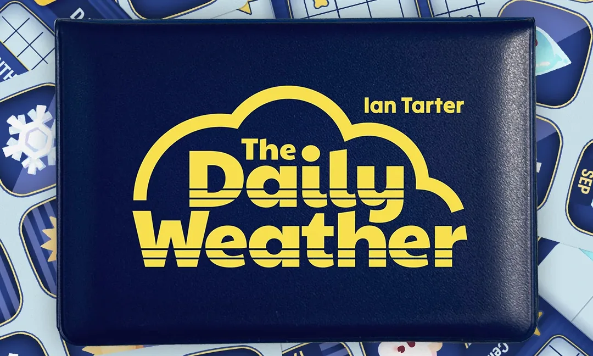
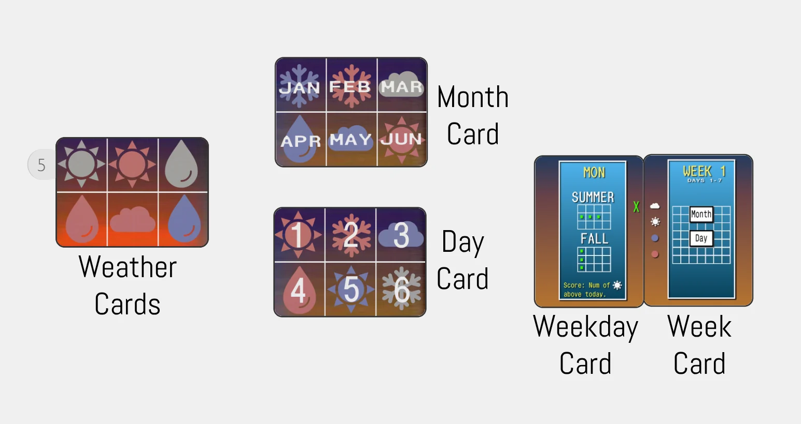
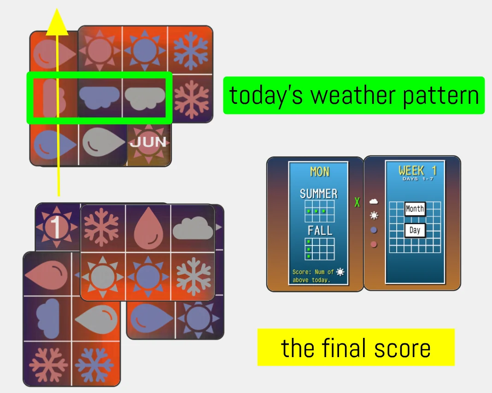

A new puzzle every day
I designed a pocket-sized solo card game that gives you a different puzzle every day, then tested it in public until a publisher picked it up.
- Role
- Game designer
- Methods
- Comparing existing puzzles, solo testing, public playtesting, feedback rounds
- Made for
- Button Shy's 9 Cards Per Game design contest
- Outcome
- Top three in the contest, then published; Kickstarter raised over $29,000

- Study what worksA wooden puzzle-a-day, Wordle, and Button Shy's weekly solo challenges
- Set the goalsShort, shareable, and different every day, week, month and season
- Play it in publicMy daily solutions posted on Discord, with other players joining in
- Pitch itA video made from a month of my own daily solves
The problem
Daily puzzles like Wordle work because everyone plays the same one and compares notes. On a table, that breaks. If everyone has the same puzzle, sharing your answer spoils it for everyone else, and a card game with one puzzle gets solved once and put away.
Could a small deck of cards give everyone a new puzzle each day that's still worth sharing?
My approach
Start from what already works. The idea came from a wooden puzzle-a-day in my college's economics lobby, where you cover every date except today's. Button Shy already ran weekly solo challenges that players shared online. I wanted a game that built those challenges in.
Write the goals down first. Each game starts from shuffled cards, so a shared solution can't simply be copied. The puzzle changes every day, week, month and season, so there's always a reason to come back. And like Wordle, a game should be short, so a solve used just five cards.

Tune the difficulty by playing. Each day asks for a pattern on the finished map. After testing, I settled on three matching shapes or four matching colors as the right challenge.

What players changed
I shared the prototype with Button Shy's Discord community, and two suggestions from another designer there changed the game most. First, my theme borrowed the look of the Aztec calendar without respecting the culture behind it, so I switched to a late-80s weather report, which suits a game you play every day. Second, add a score. I added one, like the time on a daily crossword, to give people something to compare and a reason to try again.
Then I started posting my solution every day. Other players joined in, and two of them kept playing the prototype for months.
Outcome
The game made the top three in the contest, and Button Shy's owner offered to publish it. Their team then playtested it widely and reworked the difficulty, the hand of cards and the layout, with art by Manon Mergnat. Its Kickstarter raised over $29,000 from more than 1,800 backers.
“The Daily Weather is going to be a beloved addition to your collection.”
What’s Eric Playing?
“If you’re a fan of spatial puzzles, this one is a must-have in my opinion.”
Yogi Bear and Delaware
The biggest lesson was that limits helped me finish. Before this, I often stalled after playtesting because I couldn't tell which change was better. The contest's nine-card limit and my own written goals gave me a way to judge each one.